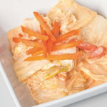
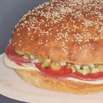

Sneak Peak


Praise for The Everyday Fermentation Handbook
-
Amanda Feifer
Founder of Phickle.com
-
Benjamin Wolfe
Microbiologist at Harvard University and regular contributor to Lucky Peach
-
Sandor Ellix Katz
Author of The Art of Fermentation and Wild Fermentation
-
Austin Durant
Founder of Fermenters Club
-
Eva Bakkeslett
Artist, Cultivator and Fermenter
-
Philip Crawford
Slow Food Madison Board Member and Founder of Madison Food Camp
-
Kim Bartko
Program Director of Good Food Festival
-
Sean Timberlake
Founder of Punk Domestics